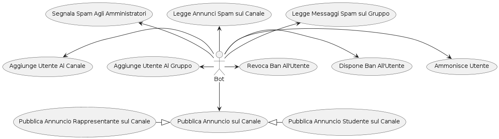
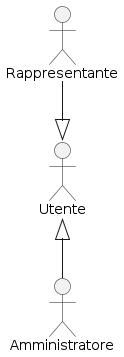

Coding Rules
Diagrammi dei Casi d'Uso
- Gli ID degli Attori usano il PascalCase
- Gli ID dei Casi d'Uso usano il camelCase
- Si deve dividere il documento in sezioni usando i commenti
- La sezione Attori dichiara gli Attori
- La sezione Casi d'Uso dichiara i Casi d'Uso
- La sezione Relazioni dichiara le relazioni Attore - Attore, Attore - Caso d'Uso and Caso d'Uso - Caso d'Uso
- Si deve cercare di usare tutto lo spazio disponibile del "foglio" (si consiglia di usare left, up, right, down)
Diagrammi del Modello di Dominio
- Si deve dividere il documento in sezioni usando i commenti
- Si deve cercare di usare tutto lo spazio disponibile del "foglio" (si consiglia di usare left, up, right, down)
Consegna
Canali
- Di ateneo/generale: lì vengono pubblicati gli avvisi/mess per tutti; dagli admin o da chi passa per il bot pubblicazione annunci
- Di dipartimento/corso di laurea: e.g. DISCO/Informatica ; Economia; ecc...
- Di vendita roba
- Di eventi delle associazioni
- Per ogni sezione di rappresentanza/ccd
- Delle liste dei rappresentanti
Gruppi
- Per ogni sezione di rappresentanza/ccd
- Uno per dipartimento o uno solo per l'universita' sulle tesi
- Uno per facolta'
- Uno per ogni anno di ogni corso di laurea
- Uno per insegnamento
Bot
- Antispam/flame
- Dopo 3 mess eliminati ban da tutto il sistema
- User bannato = log-out da tutti i gruppi; aggiunta in blacklist -> no nuovi accessi ai gruppi perchè verrebbe rimbalzato all'accesso
- Scrivo al bot-informazioni che dà quello che gli chiedo(e.g. link gruppo informatica)
- Utilita' logging, blacklist, per admin(comando inline per delegare/concedere poteri admin)
- Annunci, saranno filtrati/approvati dagli admin(magari solo un mess per settimana)
- Se e' uno studente, può pubblicare sul canale d'ateneo
- Se a scrivere e' un rappresentante, il mess sara' pubblicato sul canale della sua lista di rappresentanza(e.g. il comunista scrive e il mess finisce sul canale degli avvisi lista comunista)
- Apertura segnalazione ai rappresentanti, il bot lo invia al gruppo interno ai rappresentanti
- Notifiche ateneo(uno sneak-peek delle mail importanti di ateneo)
Software
- Possibilmente su Azure
- Licenza da stabilire
Diagrammi dei Casi d'Uso


Diagrammi del Modello di Dominio